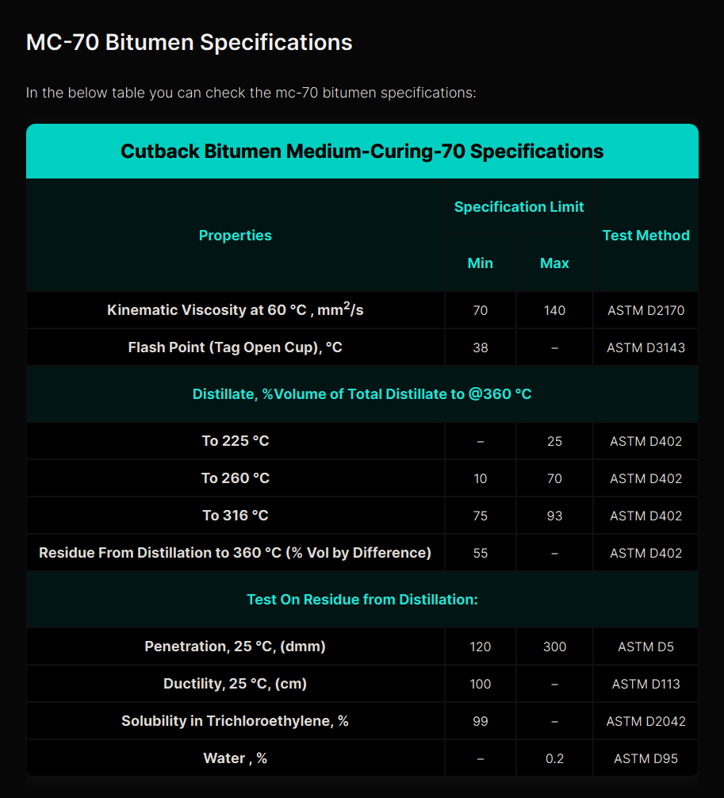

Cutback Bitumen MC‑70 – General Description │ Iran Bitumen Supply Int │ IBSI
Cutback Bitumen MC‑70 is a medium‑curing cutback asphalt produced by blending high‑quality penetration‑grade bitumen with a medium‑volatility petroleum solvent, typically kerosene. This solvent temporarily lowers the viscosity of the bitumen, allowing it to be applied easily at lower temperatures without heating. Once applied, the solvent gradually evaporates, leaving behind a durable bitumen binder that performs the same function as conventional asphalt cement. MC‑70 is widely used in road construction and maintenance, particularly as a prime coat on granular base courses. Its reduced viscosity allows it to penetrate deeply into the surface, bind loose particles, and create a strong, waterproof foundation for the subsequent asphalt layer. Because it wets aggregates effectively, MC‑70 is also used in seal coats, patching mixes, and cold‑applied asphalt treatments. At Iran Bitumen Supply Int │ IBSI, our MC‑70 is produced from premium vacuum residue feedstock and blended with carefully selected petroleum solvents to ensure consistent curing behavior and full compliance with ASTM D2028 specifications. The thermoplastic nature of the base bitumen ensures reliable performance across a wide range of temperatures, softening when heated and hardening as it cools.
Understanding How MC‑70 Works
Cutback bitumen is created by dissolving bitumen in volatile petroleum solvents. In MC‑70, kerosene is used as the cutter to achieve a medium curing rate. This temporary reduction in viscosity allows the bitumen to flow into the pores of the base course, improving adhesion and waterproofing. As the solvent evaporates, the bitumen regains its original hardness and viscosity, forming a stable and durable bond. The controlled curing time of MC‑70 ensures that the bitumen penetrates sufficiently before hardening. If the solvent evaporates too slowly, the pavement may remain soft longer than desired, but when properly formulated, MC‑70 provides excellent performance in both warm and moderate climates.
Applications of Cutback Bitumen MC‑70
Cutback Bitumen MC‑70 is primarily used as a prime coat in road construction. Its ability to penetrate granular surfaces makes it ideal for preparing the base layer before applying hot mix asphalt. MC‑70 fills capillary voids, stabilizes loose particles, and creates a waterproof barrier that enhances the durability of the final pavement structure. MC‑70 is also used in roofing applications, where it serves as a waterproofing membrane and as an adhesive for applying protective chippings on flat roofs. In addition, it is used to seal surfaces, bond mineral particles, and prepare non‑asphalt surfaces for further construction treatments. In maintenance operations, MC‑70 is used in patching mixes, stockpile mixes, and cold‑applied asphalt treatments. Because it does not require heating, it is especially useful in remote areas, small‑scale projects, and situations where heating equipment is not available.
Packing Options for Cutback Bitumen MC‑70
At Iran Bitumen Supply Int │ IBSI, MC‑70 is supplied in packaging formats designed for safe handling and efficient transport. It is available in bulk tankers for large‑scale projects and in new steel drums placed on pallets to prevent leakage during containerized shipping. These packaging options ensure that the product arrives in optimal condition and is ready for immediate use on site.

Specification of Bitumen MC‑70